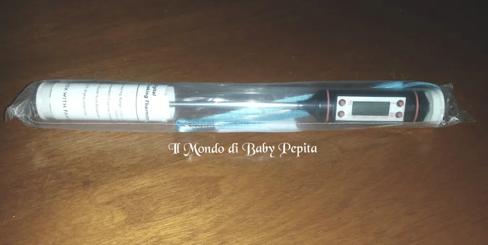
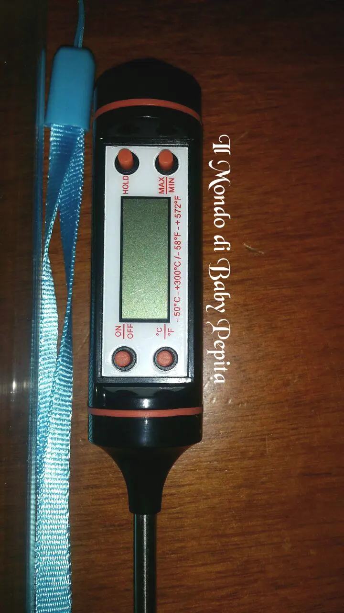
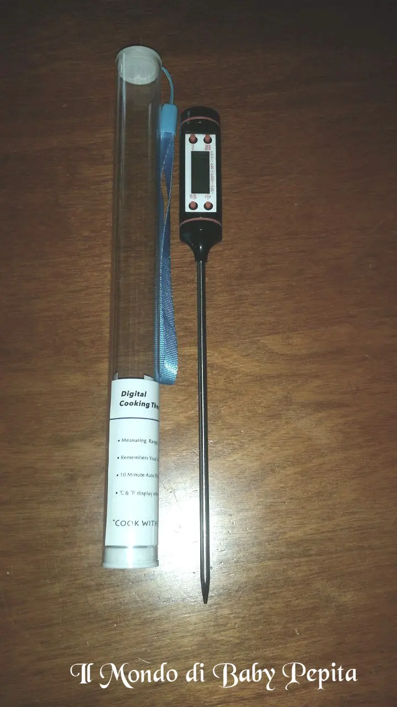
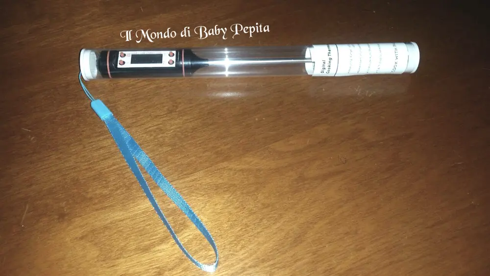

GoldenSwing - termometro da cucina
 Il venditore GoldenSwing mi ha omaggiato di questo termometro digitale da cucina.Ve ne voglio parlare in modo più dettaglio.Arrivato in un cilindro di plastica trasparente che contiene appunto il termometro e le istruzioni (in inglese).
Il venditore GoldenSwing mi ha omaggiato di questo termometro digitale da cucina.Ve ne voglio parlare in modo più dettaglio.Arrivato in un cilindro di plastica trasparente che contiene appunto il termometro e le istruzioni (in inglese).

Ma non ci vorrà molto per capire come usarlo, soprattutto con chi ama stare ai fornelli saprà di sicuro come maneggiare questo prodotto.Ha il manico in silicone nero al centro del manico c'è il display digitale dove ci dirà appunto, i gradi. Esso ha 4 tasti:
Esso ha 4 tasti:- Il tasto ON/OFF per accendere e spegnere il termometro
- Il tasto HOLD che serve per bloccare il grado raggiunto
- Il tasto °C/°F per visualizzare la temperatura rispettivamente in gradi Celsius o in Fahrenheit
- Il tasto MAX/MIN per sapere la temperatura massima e minima registrata

Ha poi un stelo lungo, che sarebbe l'ago che sarà immerso nella pentola o in una pasta di pane lungo ben 5.9 pollici ed è ovviamente in acciaio inox.
Ha una lettura di gradi davvero precisa e il display cambia rapidamente la gradazione in breve tempo.
E' perfettamente in grado di riuscire a misurare la temperatura sia per alimenti solidi che per quelli liquidi.Riesce a captare fino a un massimo di 300 gradi e minime di -50Inoltre è già dotato di batterie LR44.
Io direi un prodotto super valido visto anche il minimo prezzo.Consiglio a tutti di acquistare per chi non fa altro che sperimentare in cucina.Prezzo: 8,90 €Per acquistarlo:https://www.amazon.it/gp/product/B01DOY0O0O/ref=oh_aui_detailpage_o02_s00?ie=UTF8&psc=1 Per quanto riguarda me seguitemi su:FACEBOOKINSTAGRAMTWITTERYOUTUBE